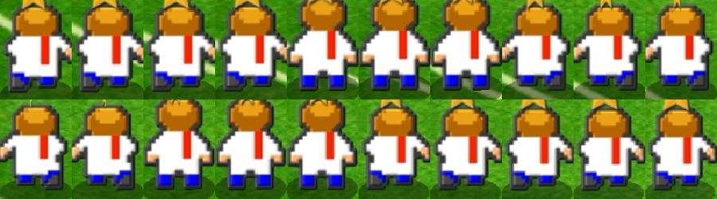

走り確認画面（背中向き・全身を描いたコマ）
走りの2つの形（左右）
本家の動画の走りの2つの形（A・C）。全身を1枚の絵として描き、キャンバスの大きさと足もとの基準点は同じです。
実際の試合と同じ大きさ
左：試合と同じ大きさ（1ドット＝2.6画素）で再生／右：いまあるコマを同じ大きさで並べたもの
拡大して再生・コマ送り
左手右手左足右足
いまあるコマ（拡大）
本家（背中向きの走り・動画から切り出し）

このコマの決め方
・カルチョビットAの背中（写真）と走り（動画）を、ドット単位で読み取って描き直しました（23×29ドット）。頭身・髪・服（白シャツと背中の赤い線）・色は本家に合わせています。
・形：肩は首から階段状に下がり、腕は胴とつながった短い袖、手は小さく腰の横に出ます（ゴツい四角い肩や太い腕はやめました）。
・本家の走りは4枚のくり返し：A（左腕を後ろへ振り出し、右足を後ろへ蹴る）→ N（待機と同じ形）→ C（Aの左右逆）→ N。A・Cは約0.13秒、Nは約0.1秒（動画30コマ/秒で 4・3・4・3コマ）。
・振り出した腕：袖が胴から離れて外へ出て、手が外の下を向きます。反対の腕は前へ振って隠れ、その側の胴の横はまっすぐになります。
・後ろへ蹴った足：くつ下の下に濃い靴が出て、手前に来るので接地した足より1段下に見えます（本家どおり）。
・全コマ同じ大きさ・同じ足もとの基準点で、位置の補正はしていません。今までの絵より少し大きい（高さ29ドット）ので、試合に入れるときに大きさを合わせます。